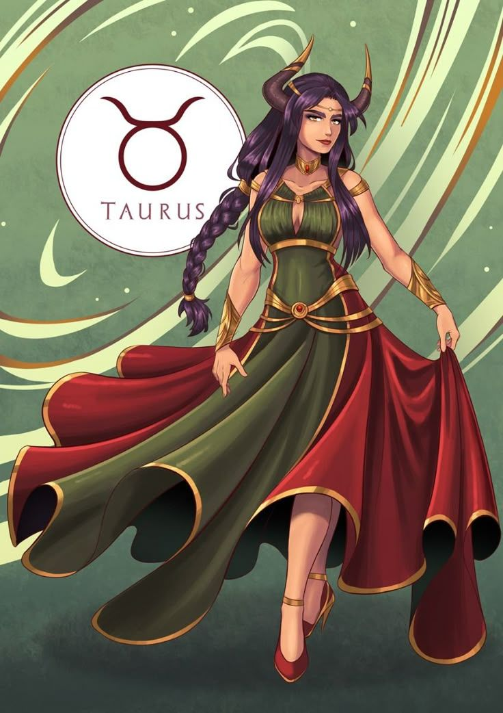
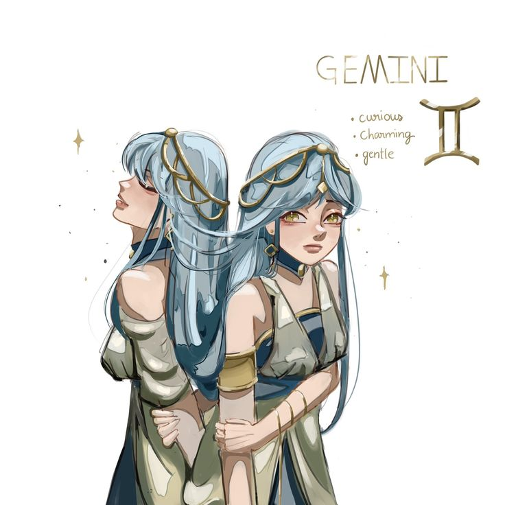
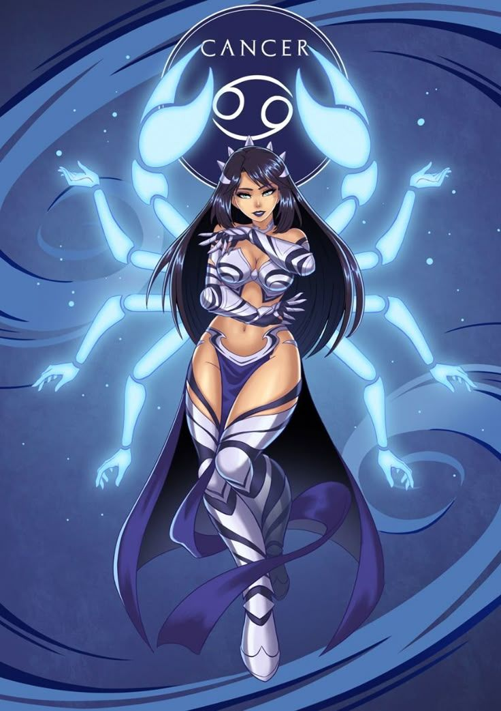
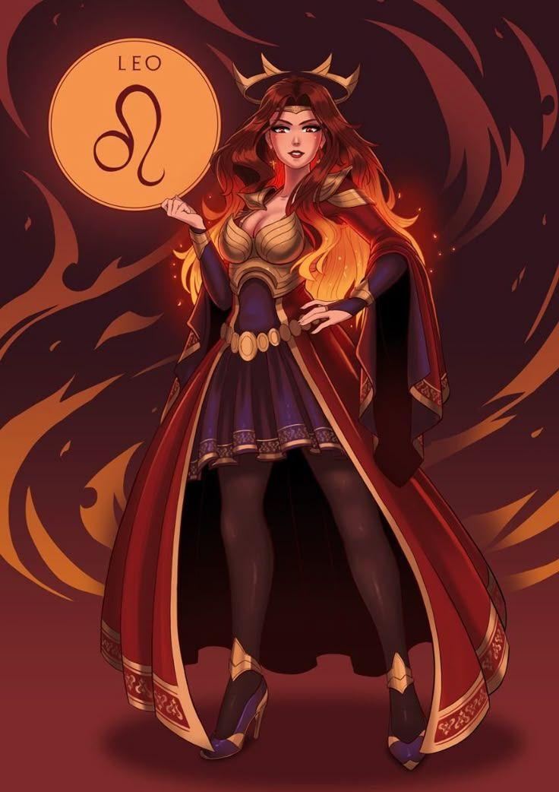
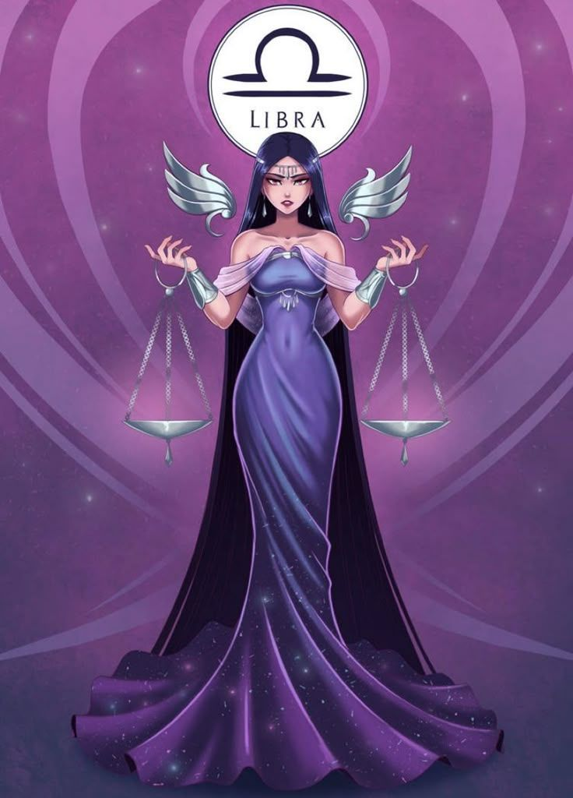
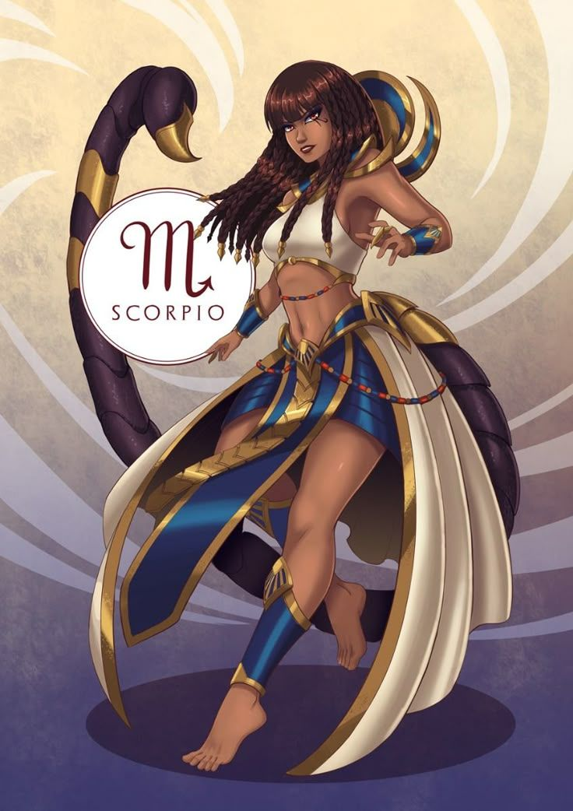
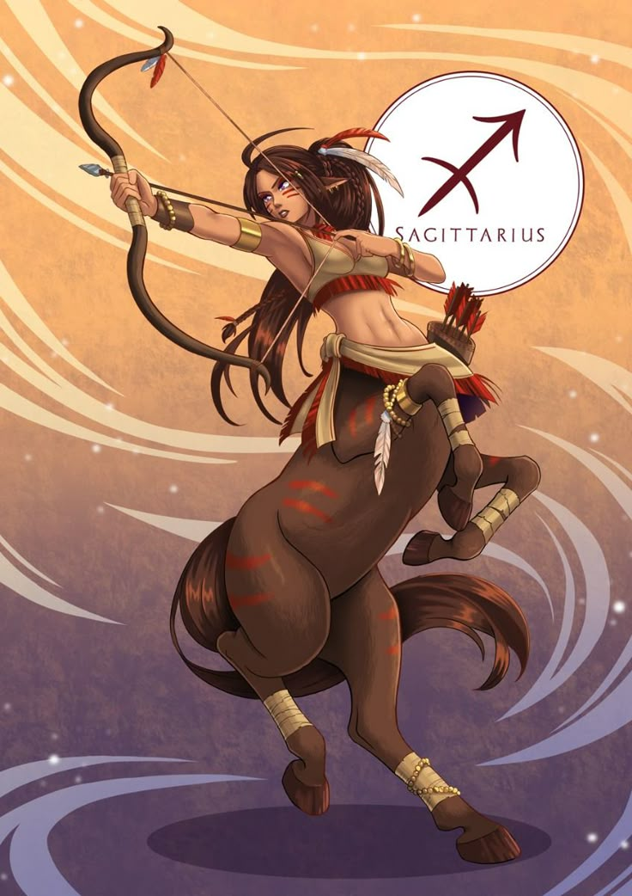
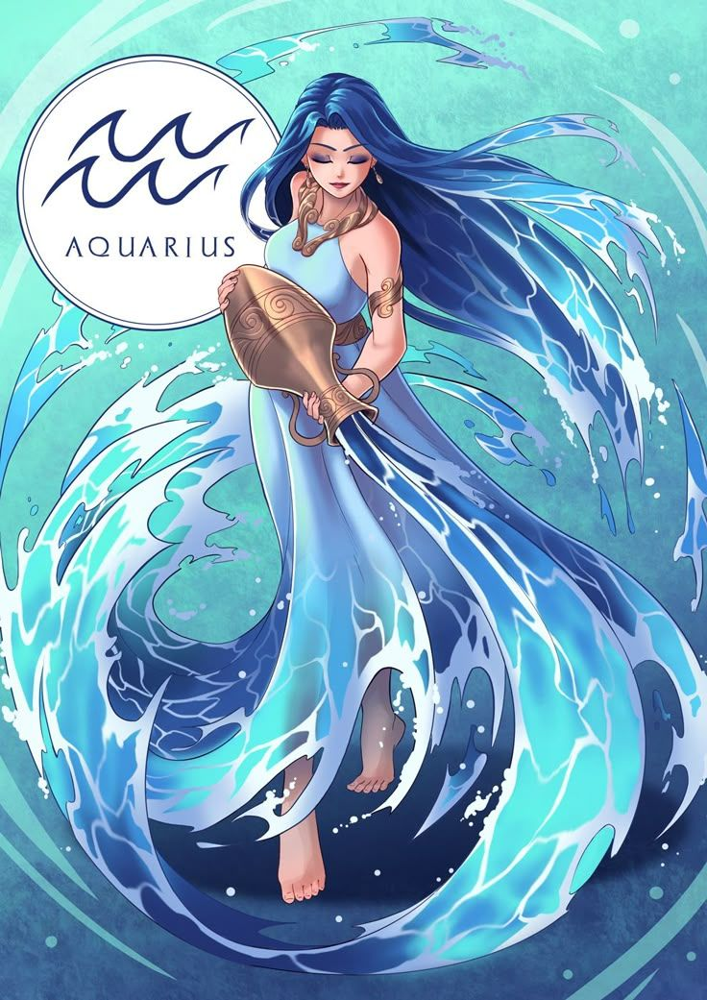
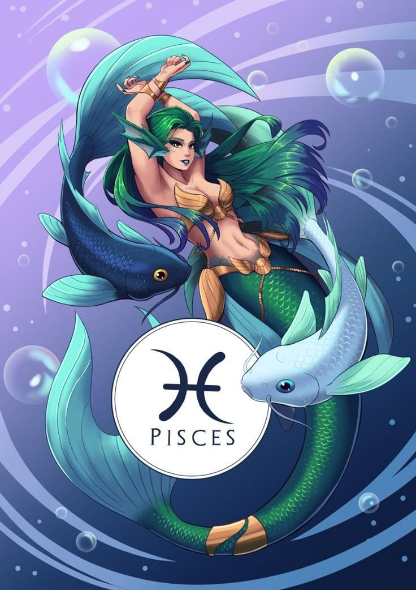

Aries (21 de marzo - 19 de abril): Los arianos son conocidos por su energía y entusiasmo. Son pioneros por naturaleza,
siempre listos para liderar y tomar la iniciativa. Les encanta enfrentarse a nuevos desafíos y experimentar cosas nuevas .
Valentía, determinación, seguridad en sí mismos y optimismo .
Impaciencia, impulsividad, agresividad y dificultad para controlar su temperamento .
Tauro (20 de abril - 20 de mayo): Los tauro son prácticos y confiables. Valoran la estabilidad y la
seguridad en todos los aspectos de su vida. Son pacientes y tienen un fuerte sentido de la realidad .
Persistencia, lealtad y dedicación. Disfrutan de la belleza y el lujo .
Terquedad, posesividad y dificultad para adaptarse a los cambios .
Géminis (21 de mayo - 20 de junio): Los geminianos son adaptables y curiosos. Les encanta socializar y
cosas nuevas. Son comunicativos y tienen una mente rápida .
Versatilidad, ingenio y sociabilidad. Son curiosos y exploradores .
Inconsistencia, indecisión, nerviosismo y dificultad para concentrarse .
Cáncer (21 de junio - 22 de julio): Los cancerianos son emocionales e intuitivos. Valoran profundamente la familia y el hogar.
Son protectores y tienen una gran capacidad para la empatía .
Empatía, lealtad y tenacidad. Intuitivos y protectores.
Sensibilidad excesiva, rencor, inseguridad y dificultad para dejar ir el pasado .
Leo (23 de julio - 22 de agosto): Los leones son carismáticos y creativos. Les encanta ser el centro de atención y suelen tener
una fuerte presencia. Son generosos y leales, y valoran profundamente la autenticidad .
Confianza, lealtad y liderazgo natural. Creativos y apasionados .
Arrogancia, terquedad, necesidad de admiración y tendencia a ser dominantes.
Virgo (23 de agosto - 22 de septiembre): Los virgo son analíticos y detallistas. Son perfeccionistas y
tienen un gran sentido del deber. Son muy buenos para resolver problemas y valoran el orden y la limpieza .
Meticulosidad, confiabilidad y capacidad para analizar y planificar. Trabajadores y organizados
Crítica excesiva, preocupación, perfeccionismo y dificultad para relajarse.
Libra (23 de septiembre - 22 de octubre): Los libra son diplomáticos y encantadores. Valoran la armonía y
la justicia en todas sus formas. Tienen una gran capacidad para ver ambos lados de una situación y buscan
siempre el equilibrio .
Cooperación, imparcialidad y sociabilidad. Excelentes negociadores y mediadores .
Indecisión, complacencia, tendencia a evitar conflictos y sacrificio de sus propias necesidades .
Escorpio (23 de octubre - 21 de noviembre): Los escorpio son apasionados y valientes. Tienen una gran
profundidad emocional y son muy intuitivos. Son intensos y tienen un fuerte sentido de determinación .
Lealtad, valentía y perspicacia. Introspectivos y determinados .
Celos, secretismo, control, desconfianza y rencor .
Sagitario (22 de noviembre - 21 de diciembre): Los sagitario son conocidos por su amor por la aventura y su actitud filosófica.
Les encanta explorar y aprender sobre diferentes culturas y filosofías. Son optimistas y tienen una visión positiva de la vida .
Honestidad, optimismo e independencia. Sabios y visionarios .
Impaciencia, falta de tacto, tendencia a prometer más de lo que pueden cumplir y descuido en sus compromisos .
Acuario (20 de enero - 18 de febrero): Los acuario son innovadores y humanitarios. Valoran la libertad y la independencia.
un enfoque futurista y disfrutan de las ideas originales y progresistas .
Progresismo, originalidad e idealismo. Innovadores naturales .
Imprevisibilidad, desapego emocional, excentricidad y aislamiento .
Piscis (19 de febrero - 20 de marzo): Los piscis son compasivos y artísticos. Tienen una naturaleza muy sensible y son muy empáticos.
Disfrutan de las artes y tienen una gran capacidad para la imaginación .
Imaginación, empatía y altruismo. Artistas y visionarios naturales .
Evasión de la realidad, falta de voluntad, exceso de confianza y dificultad para establecer límites .